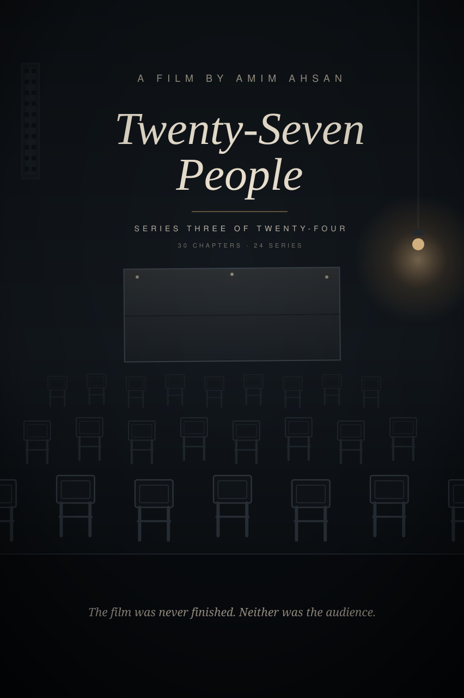

Arnie Stetler
84, the projectionist
Punched four hundred cards a night for thirty years. Typed the list. Voted no.

Series Three of Twenty-Four
The film was never finished. Neither was the audience.
A church basement, twenty-seven folding chairs, and six strangers who find out they are the entire audience for a film that has already happened.
Series three · winter
Arnie Stetler is eighty-four and has kept a 16mm can in a church closet for thirty-nine years. Inside it: three reels of a documentary about the third shift at the Wren's Crossing Woolen Mill, shot in 1985 by a twenty-nine-year-old named Ellis Vane, who died on Route 9 with the fourth reel on the seat beside him.
Arnie types twenty-seven names on an index card and mails twenty-seven invitations. Six people come. One is the daughter of a woman who cannot come. One is a building inspector who came about the roof. One is seventeen and is here for service hours. One has a notebook and no idea why he answered.
A film with no audience is just a can in a garage. I have been the only audience for this for thirty-nine years, and I am not enough.
What the missing reel shows is not a crime and not a secret. It is eleven people in a break room at midnight voting to work two weeks for nothing so that the pension would stay whole for the men who could not leave. The town has believed the opposite for forty years. Thirty chapters later, the film has an ending, and so does the town.
Twelve who are in it
84, the projectionist
Punched four hundred cards a night for thirty years. Typed the list. Voted no.
22, the projectionist now
Came for a film and found his grandmother at number nineteen.
79, third shift
Nine years on loom fourteen. Proposed the vote. Has never once bragged about it.
41, Cora's daughter
Hospice aide. Knows how to sit with a person who is leaving.
46, the inspector
Came to fail a roof. Left with a father who voted yes.
17, service hours
Logged the wrong things for a week and then filmed the right ones.
54, the keys
Runs a church with nine hundred dollars and a very good cookie.
81, the ledger
Ran the break room. Kept eleven years of shifts in a notebook. Remembers the vote.
29, the filmmaker
Shot the mill because the light came through the roof glass at four. Died with four reels on the seat.
81, the reporter
Wrote the wrong headline in forty minutes and has carried it for forty years.
68, the diner
Believed his father sold out. Comes to the screening with his hat in his hands.
the subject
A slab now. Two hundred and forty looms then, and a break room at midnight.
Three parts · five chapters a page
Full screenplay · INT. / EXT.
Part One — The List
Six folding chairs. Two rows of three. ARNIE STETLER, eighty-four, sets the last one down, squares it with his foot, and sits in the front row alone. The hall could hold forty. A coffee urn clicks somewhere behind him.
The door at the top of the stairs opens. CORIN VALE, twenty-two, comes down with rain on his coat and a notebook he is already holding open.
CORIN
Is this the screening?
ARNIE
This is the audience.
Corin looks at the six chairs. Then at the room. Then at Arnie.
CORIN
Where is everybody?
ARNIE
You're it, so far. Sit anywhere. Sit where you'd sit if there were forty people, that way you're not sitting where somebody told you to.
The door opens four more times. NADINE OKAFOR, forty-one, in scrubs and a coat over them. WALTER PIKE, seventy-nine, with a stick he does not lean on. LUIS BARROS, forty-six, holding a clipboard like it is a reason. TESSA NG, seventeen, headphones around her neck, sent here by a school.
Each of them says one sentence to Arnie. He writes nothing down.
WALTER
You sent me a card that says I'm in a film.
ARNIE
You are.
WALTER
I'm seventy-nine.
ARNIE
So's the film.
PASTOR DEE ALCOTT, fifty-four, comes down the stairs with a plate of cookies and sets it on the piano.
DEE
Thank you for coming. I know the invitation was strange. Arnie typed it himself and I read it twice and I couldn't find a single thing to fix.
ARNIE
Twenty-seven cards. Six of you came.
ARNIE
(a beat)
That's four more than I expected.
Part One — The List
Tessa holds her phone up. Then higher. Then to the ceiling.
TESSA
There's no signal down here.
DEE
There's no signal down here, there's no signal in the sanctuary, and there's no signal in the office. The building is one hundred and thirty years old and it was built out of rock by people who did not want to be reached.
Luis is walking the wall with his clipboard, thumb against the plaster.
LUIS
You've got a crack from the sill to the sill. The flashing's gone. This isn't a roof, it's a suggestion.
DEE
Four thousand.
LUIS
Forty-two hundred with the gutter.
DEE
We have nine hundred.
Luis stops writing. Looks at her.
LUIS
I can't pass this roof.
DEE
I know. I'm not asking you to lie. I'm asking you to come back on Tuesday.
Corin has found the projector: a Bell & Howell on a trolley with one bad wheel, dust on it like felt. Beside it, a closet door with a hasp and a padlock.
CORIN
Is this it?
ARNIE
That's it.
CORIN
What's in the closet?
ARNIE
Forty years.
Tessa looks up from her phone, which has nothing on it, at a boy her own age talking to an old man about a closet. She puts the phone in her pocket. She does not take it out again for the rest of the night.
Part One — The List
Arnie sets a five-by-eight index card on the piano lid and turns it so they can read it. Twenty-seven names, typed, two columns, a pencil initial beside some of them.
ARNIE
That's the list. That's all I have that says any of us were there.
They gather. Walter finds himself in four seconds and does not say anything for a while.
WALTER
Pike, W. Third shift.
NADINE
(reading)
Dunne, C. Fourth name down.
LUIS
(quietly)
Barros, M.
Corin reads the whole card twice, top to bottom, the way you read a page you are afraid of. Then he looks up.
CORIN
There's no Vane on this.
ARNIE
No.
CORIN
Ellis Vane made the film. He's not on his own list.
ARNIE
The list isn't people who made it. It's people who are in it.
CORIN
Then why am I here?
ARNIE
Because you answered.
Tessa has the card now. She reads it the way she reads a menu: fast, then again.
TESSA
There's twenty-seven names and six chairs.
ARNIE
There are six chairs because there are six of you.
TESSA
Then the other twenty-one were supposed to stand?
Arnie looks at the chairs. He had not thought of it that way, and it shows.
ARNIE
...I'll bring more chairs.
Part One — The List
Nadine sits with the card on her knees.
NADINE
Cora Dunne is my mother.
ARNIE
I know.
NADINE
She doesn't know what year it is. She knows the song from the coffee commercial and she knows my father's birthday and she thinks the mill is still open.
ARNIE
Then she's the only one.
NADINE
She got the card. I opened it. "You are one of twenty-seven. The film is forty years late. Please come."
She looks at the empty chair beside her.
NADINE
She kept a ledger of who worked what. Every shift, in a book, for eleven years. She'd know all twenty-seven of these names in her sleep.
ARNIE
She wrote most of them for me.
Walter has not sat down. He is standing in front of the six chairs like a man at a bus stop.
WALTER
There weren't twenty-seven of us on that floor.
ARNIE
No.
WALTER
There were eleven. Eleven on the third shift, and that's counting the boy who swept.
LUIS
So who are the other sixteen?
ARNIE
Office. Maintenance. Two drivers. The nurse. The woman who did the payroll up to the last Friday.
WALTER
That's a list of the whole building.
ARNIE
That's what I've been trying to tell you for forty years. It's not a list of the film. It's a list of everybody who was standing in it.
Part One — The List
Arnie opens the padlock with a key he does not have to look for. The door swings. The smell is metal and vinegar.
Corin's torch finds it: a 16mm can, rust blooming across the lid, a strip of paper tape on the side in blue ink.
CORIN
(reading)
"THE LONG NIGHT SHIFT. Vane. 1985."
He lifts the lid. Three reels, wrapped in their own leader, each with a number in grease pencil on the hub.
CORIN
One. Two. Four.
He turns them over. He looks at Arnie.
CORIN
Where's three?
Arnie does not answer at once. He takes the lid from Corin, sets it down, and lines the three reels up on the shelf with the numbers facing out.
ARNIE
Reel three never came out of that building.
CORIN
You don't know that.
ARNIE
I know everything about that night except the parts I was in.
DEE
(from the doorway)
Arnie.
ARNIE
Three's gone. We have one, two, four, and a projector that hasn't turned since the Reagan administration. That's the screening.
He walks out. Walter watches him go with the flat, patient look of a man who has known him since 1962.
WALTER
He's lying.
CORIN
How can you tell?
WALTER
He lined them up by number. Arnie never lines anything up unless he's thinking about what he's not saying.
Part One — The List
The projector is open on the floor like a patient. Corin has the belt in his hand: a perished loop of rubber that crumbles when he touches it.
CORIN
This hasn't been made since 1974.
DEE
Then it's a miracle it lasted this long. Try the rummage room. There's a sewing machine in there that nobody has sewn on since the Carter administration.
Cut to: Corin holding a Singer belt up against the old one. Same length. Different century.
He fits it. He threads the film. He checks the loop, checks it again, and looks at Arnie.
ARNIE
Both sprockets. Top and bottom. If you're wrong even one hole, it will eat the film and I will let it eat you.
The lamp comes on. The motor turns. A rectangle of white light hits the bedsheet, and the countdown leader begins: 5, 4, 3, 2.
Nobody breathes. Tessa stands up without meaning to.
The leader runs out. The frame goes to black. Then: a room full of looms, in daylight, in 1985.
WALTER
(very quietly)
Oh.
Arnie's hand is on the trolley. He is not watching the screen. He is watching Walter watch the screen.
ARNIE
That's the first frame he ever shot. He shot it on a Tuesday because the light came through the roof glass at four and he said it looked like the building was on fire.
CORIN
You were there?
ARNIE
I was the one holding the door so the light wouldn't change.
Part One — The List
Reel one is over. The projector is still warm. Luis has come in here to be alone and Nadine has followed him because she saw him leave.
LUIS
My father's in that film. I've never seen a picture of him at that age. Not one.
NADINE
Where is he now?
LUIS
Allentown. He left in '86 and he sent money and he never came back for a Christmas. He died in 2011 and the man at the funeral home asked me what he did for a living and I said "he fixed looms" and I don't know if that's true. I don't know what he did in that building.
Nadine sits down on the bench. After a moment, Luis sits too, at the other end, like two people waiting for a bus.
NADINE
My mother has a ledger. Eleven years of shifts in her handwriting. It's in a box under her bed at the home and she thinks it's a grocery list now.
LUIS
Can you get it?
NADINE
I can get it. I don't know if I can read it.
Tessa appears in the doorway with her coat already on and her phone in her hand, filming the empty hooks.
TESSA
Sorry. I'm supposed to log four hours. I've been logging the wrong things.
LUIS
What were you logging?
TESSA
Sorting the hymnals. There's four hundred hymnals. Nobody's sung out of one since before I was born.
She turns the phone around and shows them: the six chairs, the bedsheet, the projector, the plate of cookies with one cookie gone.
TESSA
This is the only thing that's happened in this building in a year.
Part One — The List
Arnie sits on the piano bench with his hands on his knees. Corin sits on the floor in front of him with the notebook. Dee is folding chairs in the background and pretending not to listen.
CORIN
What was your job?
ARNIE
Timekeeper. I punched the cards. Four hundred and six people in that building and I knew every one of them by their card, not their face.
CORIN
So the list —
ARNIE
The list is the rack. Twenty-seven cards in the rack on the third shift, the night he was there. I typed it off the rack the next morning because I thought somebody would want to know who was standing in the frame.
CORIN
And nobody wanted to know.
ARNIE
The film never came out. Why would they want to know who was in it?
CORIN
What happened to him?
ARNIE
Route 9. October. He was driving back from the lab in Scranton with four reels on the seat beside him and he went off the road at the curve by the quarry. They said he fell asleep. He was twenty-nine and he'd been awake for three days and he had four reels on the seat, so yes. He fell asleep.
Nobody says anything. The urn, switched off, ticks as it cools.
TESSA
Why now?
ARNIE
Because I'm eighty-four.
TESSA
That's not an answer.
ARNIE
It's the only one I've got that's true. The other one is that I've been carrying this closet around since before your mother was born and my knees have opinions about it.
Dee sets the last chair against the wall and does not turn around.
Part One — The List
The lamp comes on. Reel one, second screening, this time with the chairs turned around and the sheet pulled tight.
On screen: the mill yard at four in the afternoon. Roof glass. Light coming down in shafts so solid you could put a ladder in them. Men walking in through the gate, not acting, not looking at the camera.
ELLIS
(V.O., young, close to the mic)
It's four o'clock. In about forty minutes the sun will come through that glass and the whole floor will look like a church, and then it will look like a mill again. I'd like somebody to say their name before that happens.
A man on screen looks up, squints into the lens, and says: "Pike. Walter Pike." Then he laughs at himself and goes back to work.
In the room, Walter puts his hand over his mouth.
The reel runs. Twelve minutes of people saying names into a camera. A woman holds up a lunch box. A boy sweeps. The light moves across the floor exactly as promised and the whole frame turns gold and then ordinary.
CORIN
(whispering, to no one)
He got it. He got the whole thing in one take.
ARNIE
He got it in four takes and picked the one where the light was honest.
On screen, the camera pans past a woman in a cardigan at a card rack, punching a clock for someone else. She looks up, sees the lens, and waves it away with the flat of her hand.
NADINE
(standing up)
That's my mother.
The reel runs out. The sheet goes white, then dark. Nobody moves to turn on the light.
Part One — The List
A flat concrete slab the size of a football field, weeds in the seams, frost on it. Walter stands at the edge with his hands in his pockets. Tessa has followed him four blocks without being invited.
TESSA
This is it?
WALTER
This is the loading dock. You're standing in the parking lot. The building went from here to the road and it was four floors and the top floor was all glass.
TESSA
It's a slab.
WALTER
It's a slab now. In 1985 there were two hundred and forty looms in there and when they all ran at once you could feel it in your fillings.
He walks out onto the concrete and stops at a particular place, counting his own steps.
WALTER
Third shift. Eleven of us, from eleven at night to seven in the morning. And for the first hour there was no supervisor, so for one hour a night the building belonged to us.
TESSA
What did you do with the hour?
WALTER
We ate. Somebody brought a radio. Cora made coffee in a pot the size of a bucket and if you were late she'd give you the cup with the chip in it.
TESSA
That's it?
WALTER
What did you expect?
TESSA
I don't know. Something.
WALTER
It was something. It was the best hour of my life and I was getting paid four dollars and ten cents to be in it.
Tessa takes her phone out, then puts it away. The wind moves the weeds.
WALTER
You can film it. I don't mind. Just don't film it like it's sad. It wasn't sad. It got sad later.
Part Two — The Reels
Reel two. The mill at two in the morning, lit by one row of sodium fixtures. A loom runs. A man tends it.
The camera does not cut. It holds on WALTER PIKE, twenty-nine, and it goes on holding. His hands move. He checks a thread. He listens to the machine the way a doctor listens to a chest.
ELLIS
(V.O.)
How long have you been on this one?
WALTER
(on screen, not looking up)
Nine years. Same loom. They tried to move me once and I told them the loom would take it personally.
In the room, Walter laughs — one short sound — and then stops laughing.
Four minutes of a man working. Nothing happens. Nobody asks for the light to be turned on.
CORIN
(quietly, to Arnie)
How long does he hold this?
ARNIE
Seven minutes and forty seconds. He ran the whole magazine. Said he wanted to see if a person could be interesting for that long without being asked to be.
WALTER
(without turning around)
He asked me a question first.
On screen, Ellis's voice, off camera, quiet: "What do you think about when it's like this?"
On screen, Walter does not answer for a long time. Then: "Whether I'm doing it right."
In the room, the seventy-nine-year-old Walter stands up, walks to the back of the hall, and stands facing the wall with his cap in his hands until the reel runs out.
Part Two — The Reels
Reel four. It begins with Ellis at his own kitchen table, forty seconds of him eating toast and looking at the lens, and then it becomes the mill's break room, then a corridor, then nothing.
Then leader. Then white. Then the reel spins out and slaps the take-up.
CORIN
That's it?
ARNIE
That's it.
CORIN
That's a hundred feet. That's four minutes. Where's the rest of the reel?
ARNIE
There is no rest of the reel. He spliced what he had and he drove to Scranton to have it printed and he never got there.
Corin is on his feet now, going through the can, the lid, the floor, as if a reel might be hiding in a church hall he has already searched twice.
CORIN
Four reels. One, two, and four are here. Reel three is missing. You said it never came out of the building.
ARNIE
That's what I said.
CORIN
Then the film isn't unfinished because he died. It's unfinished because you have a piece of it.
Silence. Dee, in the doorway, does not intervene. Walter comes back from the wall and stands where he can see Arnie's face.
ARNIE
I've had forty years to say a sentence and I can't get it out in front of a boy with a notebook.
WALTER
Say it in front of me, then.
Arnie looks at him for a long moment. Then he takes his keys out, and picks the church key off the ring, and sets it on the piano lid.
ARNIE
It's in my garage. It's been in a coffee can for thirty-nine years. And I'd appreciate it if one of you went and got it, because I can't be in the room when it plays.
Part Two — The Reels
The side door is unlocked. Corin finds the light switch, and then wishes he hadn't: a shelf of coffee cans, two rows deep, every one labelled.
"NAILS." "SCREWS, MISC." "ROOF TAR." "SCHOOL PLAY 1971."
TESSA
He's labelled his whole life.
CORIN
He was a timekeeper. He's been keeping time.
Nadine takes the can down. It is heavier than it should be. She sets it on the workbench between them and nobody opens it.
NADINE
I've been a nurse for nineteen years. I've told people worse things than this in a hallway.
CORIN
Then open it.
NADINE
You open it. I'll hold the light.
The lid comes off. Inside: a reel of 16mm, wound tight, a rubber band around it, and a folded sheet of paper gone the colour of tea.
Corin lifts the reel out and holds it up to the bare bulb like a jeweller.
CORIN
No number on the hub.
TESSA
So how do we know it's three?
CORIN
Because there's no number on the hub. He took the number off so it wouldn't be a reel anymore. It'd just be a can of film in a garage.
Nadine unfolds the paper. It is a mimeographed program: WREN'S CROSSING ELEMENTARY, THE PIRATES OF PENZANCE, MAY 1971. Stage manager: A. Stetler.
NADINE
He's been hiding it behind a school play for thirty-nine years.
Part Two — The Reels
Tessa reads the program out loud, all of it, including the ads on the back for a hardware store and a funeral home, because it is the only thing in the room that isn't the reel.
TESSA
"Stage manager, A. Stetler." He was thirty.
CORIN
He was forty-five. This is 1971.
TESSA
So he was a grown man doing the school play.
NADINE
Somebody had to.
Corin turns the reel over in his hands. A length of leader has come loose and hangs down like a curl of hair.
CORIN
We should watch it tonight.
NADINE
It's two in the morning and he asked us to get it. He didn't ask us to watch it without him.
CORIN
He said he can't be in the room when it plays. That's not the same as not wanting to know.
The three of them come out into the cold. One window of the house is lit. A shape is standing in it, not moving, holding the curtain back an inch.
TESSA
He's watching us.
NADINE
He's watching the can.
Corin lifts the can, just enough for the window to see it, and holds it there. The shape in the window does not move.
CORIN
We've got it, Mr. Stetler.
The curtain drops. The window goes dark. In the car, Tessa turns the heat up and nobody says anything for the first three blocks.
TESSA
He didn't wave.
NADINE
He's eighty-four and he's just handed over the worst thing he ever did. I wouldn't wave either.
Part Two — The Reels
They thread it at three in the morning with the lights off and the radiator going. Corin's hands are steady. He has done this four times tonight and it has stopped being a machine and become a language.
Reel three.
The break room at 11:40 p.m. A pot of coffee. Eleven people, some sitting, some leaning. A woman in a cardigan — CORA, forty-one — pouring with a steady wrist.
ELLIS
(V.O.)
It's eleven forty. In the next twenty minutes the office is going to come down here and offer you something, and I'd like to have what happens next on film, if nobody minds.
On screen, Walter Pike, twenty-nine, sets down his cup.
WALTER
(on screen)
They're offering us money to go home early.
ELLIS
(V.O.)
Are you going to take it?
WALTER
(on screen)
We're going to finish the order. Then we're going to talk about the money.
In the room, Walter has gone very still in his chair, both hands flat on his knees, watching himself say a thing he has not said out loud since 1986.
CORIN
(whispering)
What order?
WALTER
The last one. Government contract. Blankets for the Army. If we finished it, the contract paid out and the pension stayed whole. If we didn't, the lawyers got it and the men who were too old to move got a cheque for about six hundred dollars and a handshake.
NADINE
So you finished it.
WALTER
We finished it.
NADINE
For how long?
On screen, somebody asks exactly that question. Walter, twenty-nine, answers it with his mouth full.
WALTER
(on screen)
Two weeks. Unpaid. Anybody who wants to go home can go home and nobody's going to write it down.
In the room, seventy-nine-year-old Walter closes his eyes.
Part Two — The Reels
On screen: HARKNESS, sixty, from the office, in a coat because he is not staying, stands at the end of the table and makes the offer in eleven sentences. The men listen. Cora keeps pouring.
HARKNESS
(on screen)
The doors close on the thirty-first either way. That's not mine to change. What's mine is whether the last order ships. If it ships, the contract pays and the fund's whole. If it doesn't, the fund goes to the creditors and you get what's left.
WALTER
(on screen)
And if we work the two weeks for nothing?
HARKNESS
(on screen)
Then you've made a donation to eleven men who can't move to Allentown.
Harkness leaves. The door swings. The room is eleven people and a camera and a pot of coffee.
On screen, Walter stands.
WALTER
(on screen)
I'm going to say a thing and then we're going to vote on it and whatever the vote is, that's what we do, and nobody gets to be a hero about it after.
WALTER
(on screen)
I say we finish the order. Two weeks. For the men who can't follow us out of here.
On screen, Ellis's voice, off camera: "Can I get this? All of it?"
On screen, Walter: "Get it. Hands up for the two weeks."
Hands. One. Two. Five. Nine. Ten. Cora raises hers with the pot still in it. The camera pans the table, counting, and keeps going to the doorway — where ARNIE, forty-five, stands with a timecard in his hand.
His hand stays down.
In the hall, the phone in Tessa's pocket lights up her face, and she does not look at it.
Part Two — The Reels
The reel runs to the end. Nobody rewinds it. Arnie is in the back row, and no one heard him come in.
ARNIE
Twenty-six to one.
WALTER
Arnie.
ARNIE
I had a wife in the hospital in Scranton and a car payment and a kid at home and I did the arithmetic in the doorway and I put my hand in my pocket. And then every man in that room worked two weeks for nothing and then took up a collection for my two weeks, because Walter made them, and I took it.
He says the last three words to the floor.
ARNIE
I took it.
WALTER
(moving)
Arnie. Look at me. I put my hand on your shoulder and I said a thing and I meant it.
ARNIE
I know what you said. I've been not listening to it for thirty-nine years.
Corin picks up the index card and holds it up.
CORIN
This is the rack. Twenty-seven cards.
ARNIE
Twenty-seven cards. Eleven on the floor and sixteen in the rest of the building and every one of them stood in that room at some point that night. He filmed all of them. Reel three is forty minutes long and it has all twenty-seven names in it, said out loud, by the people who owned them.
NADINE
And you mailed twenty-seven invitations.
ARNIE
I mailed twenty-seven invitations.
NADINE
Why?
Arnie looks up at last. His eyes are terrible and clear.
ARNIE
Because a film with no audience is just a can in a garage, and I have been the only audience for this for thirty-nine years, and I am not enough.
Part Two — The Reels
Dee has a laptop and the church's funeral list. Nadine has her mother's ledger, brought from the home in a plastic bag, and reads the shifts out loud. Arnie sits with the card and a pencil.
DEE
Alive: Pike. Dunne. Barros. Stetler.
ARNIE
Four.
DEE
Harkness died in 2009. The two drivers are both gone. The nurse, Mrs. Petrosky, is at Cedar Ridge and she's ninety-one and she doesn't know anyone.
ARNIE
Cross her. She was in the room. She's still in the room.
CORIN
What's the total?
ARNIE
Nine alive. Twelve dead. Six I can't find, and one of those is a woman who married a man named Halloran and moved to Ohio in 1987 and might be a completely different person now.
Corin takes the card to check a spelling and stops. He reads one line. Then he sits down slowly on the piano bench.
CORIN
Vale, R.
TESSA
Vale?
CORIN
V-A-L-E. My grandmother's name was Ruth Vale. She did payroll at a mill for eleven years and she never once talked about it and she died when I was nine.
ARNIE
She's number nineteen.
CORIN
I told you I wasn't on the list.
ARNIE
You're not. You're here for her. That's a different thing and it's the better one.
Corin puts the card down very carefully, the way you put down something that has just become expensive.
CORIN
She's dead. Twelve dead.
ARNIE
Then you watch it for her, and you tell me what her face does.
Part Two — The Reels
Two eggs, toast, coffee. Behind the register, a wall of photographs: the mill in snow, the mill in sun, the mill with a banner across the front for its fiftieth anniversary.
At the counter, GERRY, sixty-eight, is telling the waitress a story he has told her before.
GERRY
They took the buyout. Every one of them. Six hundred dollars and a handshake and my father was on that shift and he never worked again.
CORIN
(quietly, to Walter)
Say something.
WALTER
No.
CORIN
You were in the room.
WALTER
And he was eight years old and his father came home and said the mill was closing and then he was quiet for the rest of his life. You can't argue with a man about a thing he's been sure of for forty years at seven in the morning.
Gerry pays. He nods at Walter on the way out, and Walter nods back, and neither of them says a word.
They stand on the sidewalk in the cold with their coffee. Across the street, the lot where the mill was: a slab, a bollard, a sign.
CORIN
So the whole town thinks they sold out.
WALTER
The whole town thinks they sold out, and the men who didn't are dead or in Florida, and the ones left don't talk about it because talking about it sounds like bragging.
CORIN
It's not bragging. It's a fact.
WALTER
A fact that makes everybody in this town feel like a fool for forty years. You want to hand a man that at the counter before he's had his coffee?
He starts walking. Then, without turning around:
WALTER
But I'd like to hand it to them by Sunday.
Part Two — The Reels
One chair. One lamp. A bedsheet. Tessa has put her phone on a hymnal and is framing it with the seriousness of a person who has just discovered she has a job.
DEE
What are we calling this?
CORIN
Testimony.
DEE
Good. This church has been in the testimony business since 1894. It's mostly been the sad kind. I'd like to try the other kind.
Walter sits in the chair. He looks at the lens. He looks at Corin.
WALTER
What do I say?
CORIN
Your name, and one sentence about that night. Nothing else. If you want to say more, don't.
Walter clears his throat.
WALTER
Walter Pike. Third shift, nine years on loom fourteen.
He stops. He looks at the floor. He starts again, and this time his voice has a grain in it.
WALTER
On the third of October, 1985, eleven of us worked two weeks without pay so the pension would stay whole for the men who couldn't leave. Nobody made us. We voted.
Silence. The camcorder's red light. Tessa, behind her phone, has stopped breathing.
WALTER
That's it. That's the whole thing. It took forty years to be one sentence.
ARNIE
(from the back)
Print it. Don't print it — there's no film — turn it off and write it down before he changes his mind.
Part Three — Twenty-Seven
Luis sits in the chair. The red light is on. He opens his mouth.
Nothing.
Corin does not stop recording. Tessa does not look away. Thirty seconds. A minute.
LUIS
(finally)
Miguel Barros. Third shift. He fixed the looms.
He stops. His jaw works.
CORIN
(gently)
Your name.
LUIS
That is my name.
CORIN
Say yours.
Long pause. The radiator ticks.
LUIS
Luis Barros. My father voted yes on the third of October and then he left in '86 and he never told me why, and I have spent thirty years thinking he was a coward, and I was wrong about him in a way I can't apologize for.
He gets up. Walks to the wall. Puts his forehead against it.
TESSA
(to Corin, whispering)
Do we cut that?
CORIN
No.
TESSA
It's — that's a lot.
CORIN
He said it into a camera on purpose. If we cut it, we're deciding for him what he's allowed to have said.
Dee comes down the stairs with a glass of water, sets it on the piano, and goes back up without a word.
LUIS
(to the wall)
Can I do it again? I want to do it once without crying.
ARNIE
Son. Nobody in the history of film has ever done it once without crying.
Part Three — Twenty-Seven
Rain. A ladder against the parish hall. Luis goes up with a torch in his teeth and a tube of roofing cement in his jacket.
Dee stands in the lot with an umbrella turned inside out, shouting upward.
DEE
You wrote the report!
LUIS
(over the rain)
I wrote the report and then I got up here and looked!
DEE
And?
LUIS
It's not the roof! It's the flashing at the chimney! It's been pouring down the inside of the wall for eleven years and the roof is fine!
He works. The rain gets worse. Dee watches a man in her parking lot become, briefly, entirely happy.
Half an hour. Luis comes down the ladder with his hands black and his hair flat to his head.
DEE
How much?
LUIS
Three hundred and forty dollars in materials and a Saturday. Not forty-two hundred. Three forty.
DEE
You just voided your own inspection.
LUIS
I voided my inspection. The roof's fine. Somebody else can sign it and I'll be in the back row with a cookie.
Dee laughs — the first full laugh out of anyone in this series — and it goes up the side of the church and comes back down.
DEE
Luis.
LUIS
Yeah.
DEE
Your father voted yes.
LUIS
(after a moment)
My father voted yes.
Part Three — Twenty-Seven
Nadine wheels her mother in. CORA DUNNE, eighty-one, looks around the hall with the flat, courteous attention of a woman being shown a room she has not seen before and does not intend to comment on.
NADINE
Mama. This is where the church is. We're going to watch something.
CORA
Is it the mill?
Nadine stops. Arnie, at the projector, turns around.
NADINE
Yes. It's the mill.
CORA
Then I'll have a cup. There's no point watching the mill without a cup.
Dee is already pouring. Cora takes it with both hands and does not drink it. She holds it the way she held it in 1985, and every person in the room sees it.
Reel three, projected onto the sheet, with the sound low. Cora watches the break room fill with people she knew.
CORA
That's Walter. He's got all his hair.
WALTER
(from the back)
I've got most of it, Cora.
On screen: the hands go up. Twenty-six of them. The camera pans to the doorway.
CORA
Twenty-six to one.
NADINE
(carefully)
Do you remember who the one was?
CORA
Arnie. He had a wife in the hospital and he put his hand in his pocket and I thought: that's the bravest no I ever saw, because he knew what we'd think.
Arnie is standing very still beside the projector.
CORA
(without turning)
Did you take the money, Arnie?
ARNIE
I took it.
CORA
Good. Somebody had to.
Part Three — Twenty-Seven
The clipping, on the coffee table, under a coaster so it will not blow away.
WREN'S CROSSING MILL MEN TAKE BUYOUT; PENSION UNCERTAIN. October 1986. By M. Kovac.
MARGE
I was twenty-six and I had forty minutes and a press release from a man in a coat.
CORIN
You never talked to the men?
MARGE
I called four of them. Three wouldn't come to the phone and the fourth said "we did all right" and I wrote it up as a buyout because that's what the release said and I had a deadline and an editor who liked a clean sentence.
She picks up the clipping, folds it along a crease it already has, and puts it down again.
MARGE
Forty years. I've had that in a drawer for forty years and every time I open the drawer I close it again.
CORIN
We're finishing his film. There's a screening on Sunday and there'll be a chair with your name on it and I'd like to put a correction on the church table next to the cookies.
MARGE
A correction.
CORIN
Five hundred words. I'll run them off at the library. You write them, I'll print them, and we'll put them by the door.
Marge looks at him for a long moment. Then she takes the pen from behind her ear and puts it down on the clipping like a woman laying a card.
MARGE
Five hundred words. I'll do it tonight and I'll do it mean.
CORIN
Do it kind.
MARGE
I'll do it kind and mean. That's the best kind of correction.
Part Three — Twenty-Seven
Twenty-seven envelopes on the piano lid. Arnie is writing them by hand, one at a time, with a fountain pen and a blotter he has brought from home.
CORIN
We could print labels. It would take four minutes.
ARNIE
It took me four months to send the last ones. I'm not making the same mistake twice.
CORIN
The mistake was the labels?
ARNIE
The mistake was the mail. You don't invite a person to a thing like this through a slot in the door. You knock.
He caps the pen, stacks the envelopes, and puts them in a canvas satchel.
ARNIE
Sunday at four. You'll run the projector. I'll be in the back row being no help at all.
A montage of doors, in the cold, at the distance of a stranger. Arnie knocks. Each door opens differently.
Door one: a woman in her fifties takes the envelope, reads the name, and says, "My father's been dead since 2004." Arnie: "I know. It's got his name on it and there's a chair."
Door two: an old man looks at the envelope and does not take it. "I don't want to see that building." Arnie: "It's not the building. It's the break room." A long pause. He takes it.
Door three: a woman cries in the doorway with the door still on the chain and says thank you four times.
Door four: Gerry, in his feed cap, holding a coffee.
GERRY
You're the one from the diner.
ARNIE
I'm the one from the diner. Your father's on the list. There's a chair for him and a chair for you.
GERRY
I'll come if you don't put me in the movie.
ARNIE
You're not in the movie. You're in the audience. It's the better part.
Part Three — Twenty-Seven
A test run. Reel one, first four feet, just to check the loop. Arnie stands at the projector with his hand on the flywheel the way another man would rest a hand on a dog.
ARNIE
Hear that? That's the shutter. When it's right, it sounds like a person breathing.
CORIN
It sounds like a machine.
ARNIE
Everything sounds like a machine until you've listened to it for sixty years.
He puts his hand flat on his chest. Looks mildly surprised, as though someone has tapped him on the shoulder.
ARNIE
Corin.
Then he goes down, and the beam goes across him, and the sheet goes white.
Fluorescent light. A vending machine. Corin in a chair with the projector belt in his hands, still holding it, four hours later.
ARNIE
(from the bed, off)
Is it four o'clock yet?
CORIN
It's one.
ARNIE
Then get out of that chair and go put the sheet up.
Corin comes to the doorway. Arnie is propped up, grey, wired to two things, and entirely himself.
CORIN
They said your heart.
ARNIE
They always say my heart. It's a very reliable organ and it's had enough of me. Listen. Both sprockets. Top and bottom. And don't let anybody touch the loop between reels, because there's a splice in reel two at the nine-minute mark and it's older than you are.
CORIN
I can't do this without you.
ARNIE
You can. That's the whole trouble with young people. You keep being able to do things.
Part Three — Twenty-Seven
Reel four, the new one, is being built by hand on a folding table. Corin has the splicing block. Tessa has the laptop. Walter is asleep in a chair with his mouth open and nobody wakes him.
TESSA
Nine testimonies. Forty minutes of tape on my phone and I've cut it to six minutes.
CORIN
Six minutes is right. Ellis's reel four is four minutes. That's a ten-minute ending.
TESSA
Then what's the last shot?
Corin lays the strip of film along the block. Looks at it. Looks at the empty chair in the corner of the hall, the one they have been filming people in for a week.
CORIN
The chair.
TESSA
The chair's empty.
CORIN
The chair's a chair. It's not empty. Nothing in a film is empty.
Walter wakes up with a start, the way old men do, and finds them looking at him.
WALTER
Did I say anything?
TESSA
You snored.
WALTER
Then I didn't say anything. Put my piece at the front. I want to be over with before anybody's had a chance to decide about me.
CORIN
It's not a piece, Mr. Pike.
WALTER
It's a piece. Everything's a piece. Just don't put music on it.
Corin cuts. The razor goes through the film with a sound like a small door closing.
CORIN
No music.
WALTER
Good. Then it's true.
Part Three — Twenty-Seven
Twenty-seven chairs. It takes four people to set them out and it takes a while, because Dee keeps straightening them and Luis keeps measuring the rows.
TESSA
(counting)
Twenty-seven.
DEE
Twenty-seven. One for every card in the rack.
TESSA
And if more than twenty-seven come?
DEE
Then we'll have had a better afternoon than 1985.
Corin is threading the projector with the belt Arnie gave him. He does the loop, checks the sprockets, checks them again, and puts his hand on the flywheel the way Arnie did.
LUIS
You all right?
CORIN
I'm going to run a forty-year-old film in a church basement for a room full of strangers and my projector man is in the hospital. I'm excellent.
They come down the stairs one at a time, in coats, taking the printed correction from the table by the door because Dee is holding it out and nobody can refuse her.
Gerry, in his feed cap, sits in the back row and takes his hat off.
Nadine wheels Cora in, and the room stands up without being asked.
Marge Kovac comes last, with a pen behind her ear, and sits in the front row like a woman at her own trial.
Part Three — Twenty-Seven
Lights out. Reel one. The mill yard, the roof glass, the light coming down in shafts. A man on screen says his name and laughs at himself.
In the third row, a woman puts her hand over her mouth. In the back, Gerry leans forward until his elbows are on his knees.
GERRY
(whispering, to nobody)
That's my father. That's my father's hat.
Reel two. Seven minutes and forty seconds of Walter at loom fourteen. Nobody moves. Somebody in the fourth row is crying and doing it silently, which is worse.
Reel three. The break room. The offer. The hands going up, one, two, five, nine, ten, and the pan to the doorway where a forty-five-year-old man keeps his hand in his pocket.
In the room, every head turns to the back, where Arnie is sitting in his wheelchair in the aisle with a nurse's hand on the chair and his eyes on the screen.
On screen: Ellis's four minutes. His kitchen table. Toast. Forty seconds of a twenty-nine-year-old man looking into a lens and chewing, and then the mill corridor, and then white.
Then the splice.
Walter, on the bedsheet, in colour, in a chair, saying: "Walter Pike. Third shift, nine years on loom fourteen."
Then Luis. Then Nadine. Then a woman of eighty in a cardigan who says her father's name because her father cannot. Then a man in Ohio on a phone screen, held up to the camera by his granddaughter. Then nine more.
Then the empty chair. Fourteen seconds. The lamp beside it. Nobody in the room breathes.
Then, over black, in a young man's voice, from 1985: "That's all I've got. I'll finish it Friday."
The reel runs out. The sheet goes white. Corin's hand is shaking on the flywheel.
Part Three — Twenty-Seven
Nobody moves for a long time. Then Dee stands up and turns the lights on, and the room blinks like people coming out of a matinee.
DEE
That was a film by Ellis Vane, who was twenty-nine, and it was finished this week by the people in this room.
Gerry stands up in the back row. He is a big man in a feed cap and he is not crying, quite.
GERRY
My father took the buyout.
WALTER
(turning)
Your father voted yes at eleven fifty-two at night and then worked two weeks for nothing and then drove me to the hospital when my back went. He took the money because there was money, son. It came out of the pension because we'd saved it. That's not a buyout, that's a trade.
Gerry sits down slowly. Then he stands up again and says, to the whole room, "I'm sorry," and the room says, in about nine different ways, "don't be."
Chairs folding. Cookies. Marge's correction going out the door in seventeen coat pockets.
Arnie is parked by the piano with the reel in his lap, the new one, the one that is eleven days old.
CORIN
Well?
ARNIE
You let it run past the splice without losing the loop.
CORIN
I fixed the splice this morning.
ARNIE
(a long pause)
Then it's yours.
Tessa has her phone propped on a hymnal, filming the room: the chairs going back against the wall, the corrections leaving, Cora asleep in her chair with her cup still in her hand.
TESSA
(to Corin)
Do we take the chairs down?
CORIN
Leave one out.
TESSA
Why?
CORIN
Because somebody's going to want to sit down, and I'd rather they found a chair than a slab.
She laughs. He doesn't. The phone keeps running. On the bedsheet, still pinned to the wall, the last of the daylight makes a rectangle the exact shape of a screen.